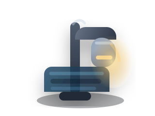
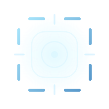

第二批可交付资产 / 战斗内场景与 HUD 对齐
狙击外星人第二批游戏美术资产预览
这批素材从“卡图与识别页”继续推进到“战斗内场景、瞄准镜 HUD、命中反馈与扫描特效”。视觉上延续首批的软 3D 卡通体块和暗色狙击 HUD 气质，但更贴近 PVE 关卡、掩体判定、扫描反馈、锁定提示与慢动作时刻的真实使用场景。
战斗场景导向
HUD 组件导向
透明背景优先
环境卡图
对应代码里的四种掩体原型：墙角、路灯、货车、广告牌，可直接用于关卡预览、图鉴和关卡拼装页。
特效贴图
对应扫描、命中、误伤、掩体命中、慢动作与枪口火光，可作为 HUD 叠加、动效草图或图集切片参考。
HUD 组件
对应瞄准镜、血量、时间、锁定框和反馈底板，更适合直接挂到 Godot 的 TextureRect、Panel 或 Control 组合里。
4
环境掩体卡图
6
战斗反馈特效
5
HUD 组件素材
15
可直接接入的 SVG 资产
环境掩体卡图
本组直接对齐 pve_cover_obstacle_3d.gd 的四种 style_id。整体强调“都市夜战、可作为掩体、扫描时轮廓仍可识别”的语义，同时保留轻微软高光和厚度感，方便进入关卡页、关卡编辑工具与商店/图鉴展示。
wall_corner
street_lamp
parked_van
billboard



特效贴图 / 图集参考
本组对应 ui_scope_overlay.gd、visual_feedback.gd 与 PVE 战斗中的反馈节点。风格坚持图形化、软边缘、轻发光，不走写实火焰或军事写实质感，更适合作为 HUD 覆盖层、教程说明图、后续动效拆帧参考。
扫描偏青蓝
命中偏绿色
误伤偏红
掩体命中偏冷蓝


HUD 组件
本组直接对齐 ui_scope_overlay.gd 与 ui_hud_pve.gd 的圆形瞄准镜、状态条、锁定框和反馈面板需求。整体是暗色底、冷白线、轻蓝发光的狙击 HUD，而不是写实军规仪表盘。
圆形瞄准镜
状态槽 + 填充槽
锁定框
反馈底板




接入建议与快速测试
建议先在真实业务路径里做“小范围接入 + 贴近玩法的快速验证”，不要先做纯展示。这样可以尽快确认掩体语义、反馈颜色和 HUD 可读性是否达标。
优先接入场景
- PVE 关卡预览页、关卡拼装页、掩体图鉴页
- 战斗主 HUD：顶部状态、反馈文案、扫描按钮附近提示
- 瞄准镜 Overlay、锁定框、命中与误伤反馈层
贴近业务的快速测试
- 在一关里混排四种掩体，确认玩家一眼能区分“厚墙角”和“高广告牌”
- 在扫描触发时叠加扫描脉冲和锁定框，确认不会抢掉准星可读性
- 在命中、误伤、打到掩体三种结果里快速切换，确认颜色反馈能直觉区分
推荐接法
- 环境 SVG 挂到图鉴、关卡卡片和编辑器预览，不必先绑定真实 3D 模型
- HUD 组件优先挂到 TextureRect / NinePatchRect / PanelContainer 做首版占位
- 特效 SVG 可先用于教程和原型动画，后续再拆分为动画序列或着色器效果